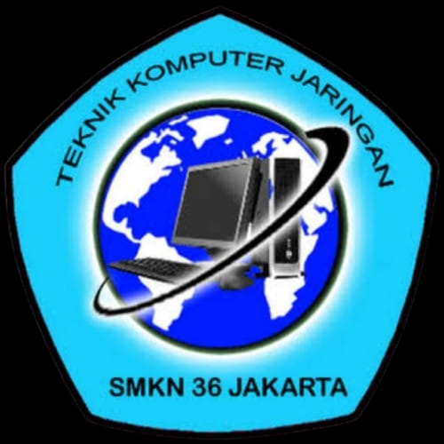
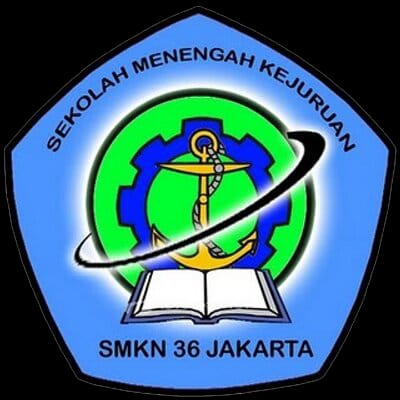
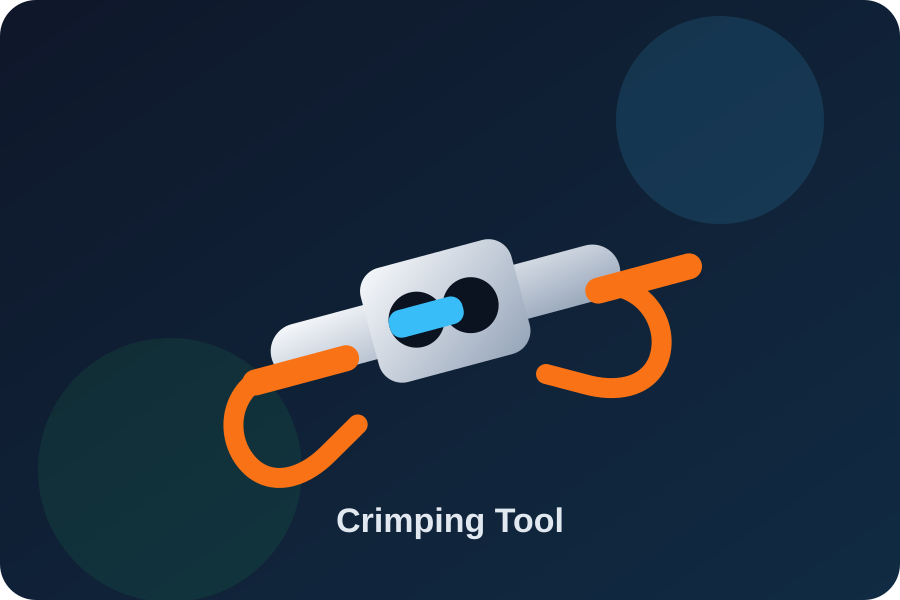
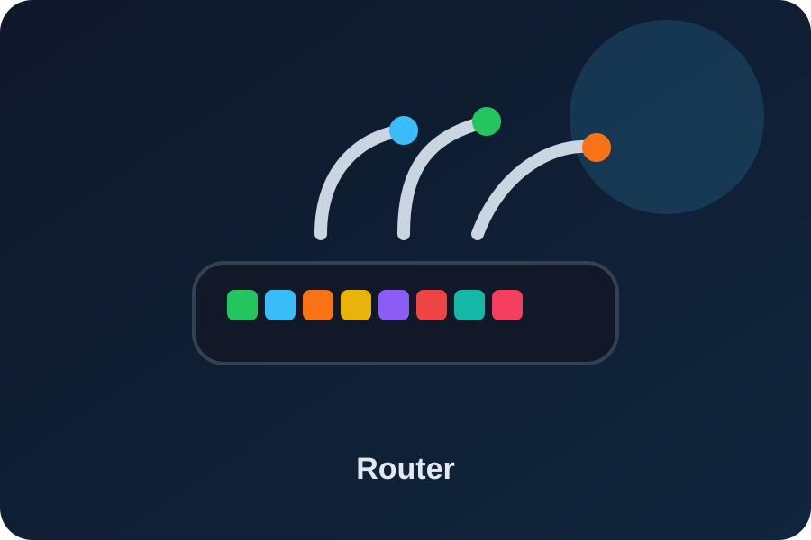
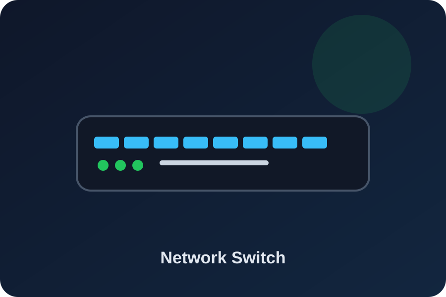
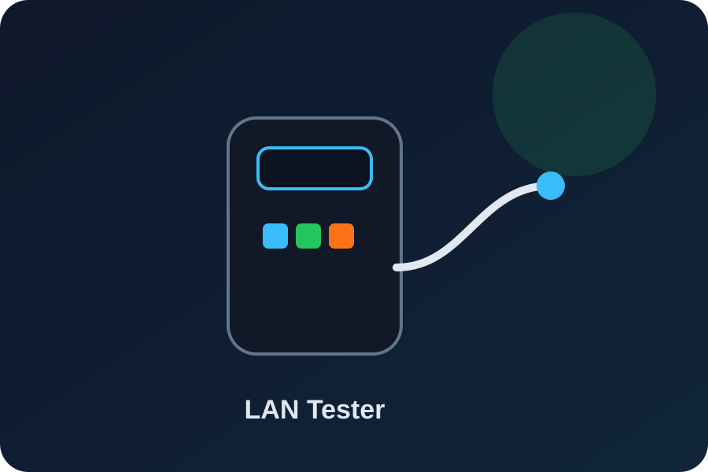
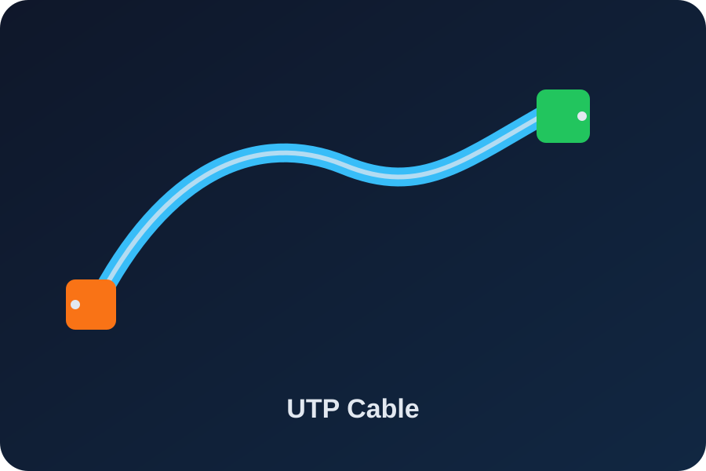

①
Ringkas
SeiriMemilah barang dan file digital agar hanya yang diperlukan saja berada di area kerja.
Di era teknologi, otomatisasi, ISP, dan data center modern, efisiensi operasional menjadi fondasi utama untuk menjaga stabilitas layanan, kecepatan perbaikan, keamanan kerja, dan target uptime hingga 99,99%.
Identitas Pembelajaran
Website ini disusun sebagai media pembelajaran budaya industri 5R dalam ekosistem Teknik Komputer & Jaringan, dengan konteks laboratorium komputer, perangkat jaringan, ruang server, dan karakter kerja profesional siswa TKJ.


Visual alat TKJ
Bagian ini menampilkan alat-alat yang akrab dalam praktik TKJ: crimping tool, router, switch, LAN tester, dan kabel UTP. Visual seperti ini membuat materi lebih mudah dipahami dan lebih menarik.





Asal-usul konsep
5R merupakan adaptasi dari 5S Jepang: Seiri, Seiton, Seiso, Seiketsu, dan Shitsuke. Konsep ini berakar dari filosofi Kaizen yang menekankan perbaikan terus-menerus dan eliminasi pemborosan.
Jika dahulu “pabrik” identik dengan lantai produksi, maka dalam dunia IT pabrik modern hadir dalam bentuk ruang server, rak jaringan, kabel fiber optik, perangkat komputer, sistem operasi, dan penyimpanan data.
Filosofi perbaikan berkelanjutan untuk mengurangi pemborosan waktu, tenaga, ruang, dan biaya.
Seiri, Seiton, Seiso, Seiketsu, dan Shitsuke menjadi fondasi manajemen lingkungan kerja yang sistematis.
Ringkas, Rapi, Resik, Rawat, dan Rajin diterapkan untuk membentuk teknisi TKJ yang profesional.
Elemen utama
Setiap elemen 5R memiliki peran langsung terhadap kecepatan kerja, keselamatan, efisiensi, dan kualitas layanan IT.
Memilah barang dan file digital agar hanya yang diperlukan saja berada di area kerja.
Menata alat, kabel, dan jalur jaringan agar mudah ditemukan serta cepat diperbaiki.
Membersihkan perangkat sekaligus melakukan inspeksi dini terhadap potensi kerusakan.
Membakukan standar kerja melalui SOP, checklist, kontrol visual, dan audit rutin.
Membangun disiplin diri agar standar 5R dijalankan karena kesadaran profesional.
Penerapan dalam TKJ
Prinsip 5R bukan hanya teori industri. Dalam TKJ, 5R diterapkan langsung saat siswa memegang kabel LAN, membongkar komputer, mengelola server, dan melakukan konfigurasi perangkat jaringan.
Konektor RJ-45 yang rusak, tang crimping yang tumpul, komponen PC terbakar, atau perangkat tidak layak pakai dipisahkan, diberi label RED TAG, lalu dipindahkan ke area karantina untuk dibuang atau didaur ulang.
Server tidak boleh dipenuhi file sampah. File ISO lama, cache, data duplikat, dan kapasitas pengguna perlu dikendalikan melalui pembersihan berkala dan penerapan disk quota.
Kabel daya listrik dan kabel data seperti UTP atau fiber optik perlu dipisahkan menggunakan cable tray atau velcro untuk mengurangi risiko gangguan elektromagnetik dan memudahkan troubleshooting.
Peralatan seperti obeng, tang, dan LAN tester ditempatkan pada papan khusus. Setiap kabel jaringan diberi label IP Address, port switch, atau kode perangkat agar proses perbaikan menjadi cepat dan akurat.
Saat membersihkan casing PC, switch, router, atau heatsink, teknisi dapat menemukan kapasitor menggelembung, kipas melemah, kabel longgar, atau tanda overheating sebelum perangkat mengalami kerusakan total.
Debu mikro pada slot RAM, port SFP, atau konektor fiber optik dapat menyebabkan lost connection. Karena itu, ruang server perlu dijaga kebersihan lantai, dinding, ventilasi, dan sistem pendinginnya.
Warna kabel dapat digunakan sebagai standar visual, misalnya kabel backbone berwarna merah, kabel distribusi berwarna kuning, dan kabel menuju komputer klien berwarna hijau.
Checklist Audit 5R perlu diisi setelah praktikum. Komputer harus dimatikan sesuai prosedur, alat dikembalikan, kabel dirapikan, dan kondisi perangkat dicatat agar tim berikutnya bekerja dengan aman.
Siswa atau teknisi harus menggunakan gelang antistatis saat membongkar komputer, memakai alas kaki aman, tidak membawa makanan dan minuman ke meja praktik, serta menjaga prosedur proper shutdown pada perangkat.
Kebiasaan kecil seperti memberi label kabel, membersihkan meja, mencatat port rusak, dan menyimpan alat di tempat semula akan membentuk mentalitas IT professional yang siap masuk dunia kerja.
Analisis risiko
Ketidakrapian kecil di ruang kerja TKJ dapat berkembang menjadi downtime, kerusakan perangkat, packet loss, bad sector, hingga kerugian finansial perusahaan.
| Elemen 5R yang Dilanggar | Kejadian / Insiden di Lapangan | Dampak Kerugian bagi Perusahaan IT |
|---|---|---|
| Ringkas Barang menumpuk | Router baru tertumpuk di bawah monitor rusak dan terlupakan hingga masa garansi habis. | Kerugian finansial, modal mati, dan ruang kerja gudang semakin sempit. |
| Rapi Kabel berantakan | Teknisi salah mencabut kabel server utama karena kabel tidak diberi label dan saling melilit. | Mean Time to Repair membengkak dan perusahaan terkena penalti karena layanan internet mati lama. |
| Resik Kotor / berdebu | Debu menyumbat sirkulasi udara perangkat jaringan sehingga terjadi overheating. | Perangkat mati mendadak, chipset rusak, dan risiko korsleting meningkat. |
| Rawat Tidak ada SOP | Port router yang longgar tidak dicatat dalam laporan kerja. | Teknisi shift berikutnya memakai port rusak untuk jalur krusial dan memicu packet loss. |
| Rajin Meremehkan aturan | Sistem operasi server tidak dimatikan dengan proper shutdown dan kabel daya langsung dicabut. | Harddisk mengalami bad sector dan basis data penting berisiko korup. |
Budaya kerja industri bukan sekadar materi ujian. Ia harus dipraktikkan setiap kali siswa memegang kabel LAN, melakukan konfigurasi perangkat, membongkar komputer, dan masuk ke laboratorium. Dengan 5R, siswa TKJ membentuk diri menjadi IT Professional yang teliti, disiplin, aman, efisien, dan siap bersaing di industri masa depan.